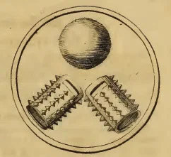
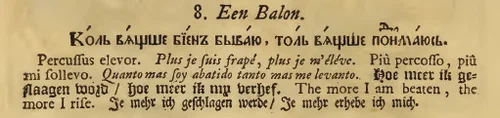
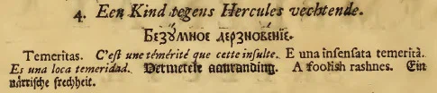

Прежде чем продолжить список кораблей Азовского флота, начатый в предыдущей записи нашего журнала, касающейся этой темы, необходимо сказать несколько слов о кораблях-баркалонах, которые были помещены в список начиная с номера 28. Относительно их родового названия есть такие же замечания, которые мы делали относительно «галеасов». Надо правильно оценивать реальную обстановку в российском кораблестроении конца XVII века. Держалось оно только на романтическом энтузиазме молодого царя, которому в 1696 г. было всего 24 года. Ни собственных корабельных мастеров, ни тем более корабельной школы в России не было. Молодому реформатору реально не на что было опереться. Те немногие «мастера», которые выдавали себя за знатоков корабельного дела, нередко оказывались заурядными проходимцами и мошенниками.
Очень образно об этом сказал С.Елагин:
«Выступая на путь, совершенно незнакомый, съ желаніемъ догнать другихъ, далеко ушедшихъ на немъ впередъ, не щадя издержекъ, Петръ, весьма естественно, не думалъ воскрешать отжившихъ историческихъ формъ, но на деньги, несомыя изъ боярскихъ палатъ, изъ монастырскихъ казно-хранилищъ, съ торжищъ и изъ крестьянскихъ избъ, желалъ осуществить у себя послѣднее слово, произнесенное наукою кораблестроенія. Торопливость, извинительная впрочемъ по тогдашему состоянію дѣлъ и довѣрчивостъ къ лицамъ, не оправдавшимъ ее своими свѣдѣніями и благонамѣренностію, наконецъ перестройки судовъ противъ первоначальныхъ ихъ чертежей, были причинами, что Воронежъ въ исход 1698 года выставилъ многіе образцы судовъ, подобій которымъ трудно было отыскать въ современныхъ флотахъ.»
Имея в последнее время достаточно свободного времени, получил возможность порассуждать о корнях названия «баркалон». С.Елагин был совершенно прав, полагая, что слово баркалон, очевидно, происходит от Barca Longa (итальянск.), Barco Luengo (нспанск.), Barque Longue (франц.). Но дальше он зашел в тупик, пытаясь найти родственные нашему баркалону корабли среди исторических типов, которые исследуются у Огюстена Жаля в его «Glossaire Nautique». В результате Елагин не смог установить других прототипов, кроме небольших судов «въ родѣ гальота, но съ болѣе тяжелою кормовою частію, закрытою ютомъ; на немъ 6 орудій, 3 мачты съ латинскими парусами, и по 12 веселъ съ каждаго борта, на постицахъ.»
Это определение никак не соответствует построенным в Воронеже баркалонам. Даже по первоначальному проекту на кораблях данного типа должно было быть по 26 орудий, не говоря уже о фактически построенных образцах, число пушек на которых было увеличено до 44 и более. О степени переделок можно судить из ответа мастера Давида Рица на жалобу кумпанства Новодевичьего монастыря, обвинившего его в неготовности корабля к сроку: «тотъ барколонъ сверхъ прежняго подряду и приказной росписи перестроиванъ трижды и построенъ тотъ барколонъ воинскимъ кораблемъ, а не барколономъ».
На самом деле речь здесь шла скорее всего о корабле, который явился в европейских флотах непосредственным предшественником корвета. В 1698 г. в королевском флоте Франции было 8 корветов, которые в то время еще носили название barques longues. Ни П.Фурнье (P. Fournier ) в своей «Гидрографии», ни Дерош (Desroches) в своем словаре не используют еще названия корвет, хотя новый корабль в корне отличался от традиционных barques longues. Французский le Paquebot, построенный, к слову, в Англии в 1689 году, имел десять четырехфунтовых пушек, а построенный на испанской Майорке l’ Immaculée Conception имел десять уже шестифунтовых пушек. Хотя к этим кораблям начиная с 1687 года применялось название корвет, впервые в узаконенном, так сказать, порядке это название появилось в словаре Обена (Aubin) в 1702 году. В дальнейшем корвет выделился в самостоятельный класс военных кораблей во многих европейских странах. Но еще в начале 20 века в английских словарях можно было встретить такое определение: «Corvette. A French sloop-of-war carrying from 20 to 32 guns.» Раннюю историю корвета можно найти в предыдущих заметках моего журнала (Корвет с корзиной на мачте и Еще несколько слов о корзинах на мачте).
Конечно же, на характеристики строящихся в Воронеже и его окрестностях кораблей влияли условия Азовского моря, прихотливое устье Дона, а также места постройки. Это вело к значительному уменьшению осадки и уполнению форм. Баркалоны по первоначальной росписи должны были иметь в длину 115 футов и в ширину 27 футов при осадке 7 футов. Однако в ходе постройки размерения многих судов менялись, в частности, значительно выросла осадка. Все эти изменения потребовали значительных переделок и добавлений, конечно, не в пользу внешнего вида кораблей.
А теперь продолжим список кораблей-баркалонов Азовского флота.
32. СТУЛЪ. (30) (135) (Кумпанство Петра Ивановича Хованского)
33. ВѢСЫ. (6) (После постройки превращен в провиантский корабль) (Кумпанство кравчего Василия Федоровича Салтыкова.)
Проекты кораблей-баркалонов не предусматривали провизионок с большими запасами провианта на борту, т.к. основная часть внутренних помещений была занята непомерно большим количеством балласта. Поэтому за боевыми соединениями флота обычно следовал отряд провиантских судов.
34. ЕЖЪ (Игель) (40) (150). Лестию и рукою. (Кумпанство князя Якова Федоровича Долгорукова.)
Далее приведен список кораблей, заложенных в Воронеже в 1697 г. и спущенных на воду в мае 1699 г. В 1701 г. они были переделаны в провиантские, посему имен им не присваивали, а в переписке они фигурировали по названиям кумпанств, которые их построили. 23 марта 1703 г. переведены из Воронежа в устье Дона.
35. Стольника князя Василия Долгорукова.
36. Окольничего Семена Федоровича Тоючанова.
37. Стольника Петра Зыкова.
38. Новодевичьего монастыря.
39. Думного дворянина Василия Семеновича Змеева.
Нет информации и о названии следующего корабля, построенного в Воронеже и переведенного в устье Дона в 1703 году:
40. Кумпанство боярина князя Михаила Алегуковича Черкаскаго. (38).(-).
Ниже приведены сведения о кораблях-баркалонах, построенных на Хопре мастером Юрием Борвутом. Точной даты их постройки не сохранилось, но достоверно известно, что в 1699 г. они входили в состав эскадры, сопровождавшей посла Украинцева в Керчь.
41. БЕЗБОЯЗНЬ (Сундербанъ. Сондерфресъ. Онберфрестъ) (36) (120).
42. БЛАГОЕ НАЧАЛО (Благое начинаніе. Гутъ анфангенъ. Гутъ бегинъ. Десегелъ бегинъ.) (36/32)(115)
43. СОЕДИНЕНІЕ (Унія. Ейнихкейтъ.) (30)(110) (Этот и два предыдущих корабля построены кумпанствами: князя Бориса Алексеевича Голицына, князя Федора Юрьевича Ромодановскаго и стольника Ивана Большаго-Дашкова.)
44. СИЛА (Старктъ) (36)(135)
45. ОТВОРЕННЫЯ ВРАТА . (Опонъ де портъ. Отвертыя врата.)
46. ЦВѢТЪ ВОЙНЫ. (36)(135) (Орлахъ блюмъ.) ( Этот и два предыдущие корабля построены кумпанствами бояр князя Михаила Яковлевича Черкаского, Петра Ивановича Прозоровского и Ивана Борисовича Троекурова.)
47. МЕРКУРІЙ (Меркуріусъ.) (22/28) (Кумпанство Князя Петра Григорьевича Львова.)
Следующие два корабля были заложены в Воронеже в 1697 г.
48. ЛЕВЪ (Левъ съ саблею.) (44/36) (180) (Спущен на воду в мае 1699 г) (Кумпанство Казанскаго митрополита и вологодского архиепископа)
49. ЕДИНОРОГЪ (Ейн-горнъ.) (44/36) (180) (Спущен на воду в мае 1699 г) (Кумпанство боярина князя Ивана Борисовича Троекурова и думного дворянина Змеева.)
Ниже следуют два корабля, заложенные в селе Чижовка в 1697 г.
50. ВИНОГРАДНАЯ ВѢТВЪ. (Вейнъ-штокъ) (58/56) (230) (Спущен на воду в апреле 1702 г) После слез происходит плод. (Кумпанство Михаила ЯковлевичаЧеркаского и стольника князя Василия Долгорукова.)
51. МЯЧЪ. (Баль) (54/50) (215) (Спущен на воду в апреле 1702 г). Коль вяще биен бываю, толь вяще поднимаюся. (Кумпанство Петра Ивановича Прозоровского и кравчего Василия Федоровича Салтыкова (Приводим изображение символа и девиза из амстердамского издания «Символы и Емблемата» 1705 года)


52. ГЕРКУЛЕСЪ. (52/48) (230) Безумное дерзновение. Заложен на Чертовицкой пристани в октябре 1697 г. (Спущен на воду в мае 1699 г) (Кумпанство князя Петра Григорьевича Львова и стольника Зыкова (Изображение символа и девиза).

В следующий раз продолжим список перечислением "барбарских" кораблей.